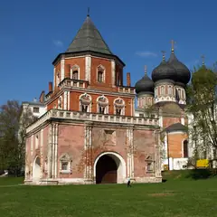

Квест с актёрами · ВАО
Immerscape
Квесты у «Измайловской», где актрисы играют с порога и выручают в трудных местах. Хит — «Запретная дверь»: страшно, но пускают и подростков. От 5500 ₽.
- ₽₽ · 1 500–3 000 ₽ на человека
- Новое в каталоге
- в 1 плане
Позвать сюда: ImmerscapeОткрыть в каталоге: ImmerscapeМаршрут до места: Immerscape
Адрес и детали
- Адрес
- Первомайская ул., 5
Открыть на Яндекс Картах (в новой вкладке) - Метро
- м. Измайловская
- Округ
- Восток (ВАО)
- Цена
- 1 500–3 000 ₽ на человека
- Часы работы
- пн–вс 10:30–21:30 · проверили в октябре 2026
- Телефон
- +7 (991) 685-86-51
- Проверено
- работает — проверили в октябре 2026
Планы с этим местом 1

- Усадьба Измайлово · Музей-усадьба · м. Партизанская
- 12 минут пешкомImmerscape · Квест с актёрами
Прогулка по острову усадьбы Измайлово мимо Покровского собора, а потом «Запретная дверь» в Immerscape: актрисы играют с порога и выручают, если совсем страшно.
Открыть план: Царский остров и «Запретная дверь»Позвать сюда: Царский остров и «Запретная дверь»
Фото: NVO, CC BY 3.0 · Wikimedia Commons
Похожие рядом
Что ещё рядом
Как позвать
- Выбери план, место или событие — в карточке адрес, цены и маршрут в Яндекс Картах.
- Нажми «Позвать сюда» — соберётся приглашение-игра для свидания или голосование для компании.
- Отправь ссылку в любой мессенджер: тебе ответят, а компания отметит, куда и когда может. Бесплатно и без регистрации.